Service platform / experience design
Rebuilding clarity from the ground up.
Modernizing an external platform for real-world tasks.
No system. No docs. Just legacy complexity. We rebuilt the platform from the inside out — transforming fragmented B2B workflows into a cohesive, trusted tool that supported real work and scaled with evolving services.
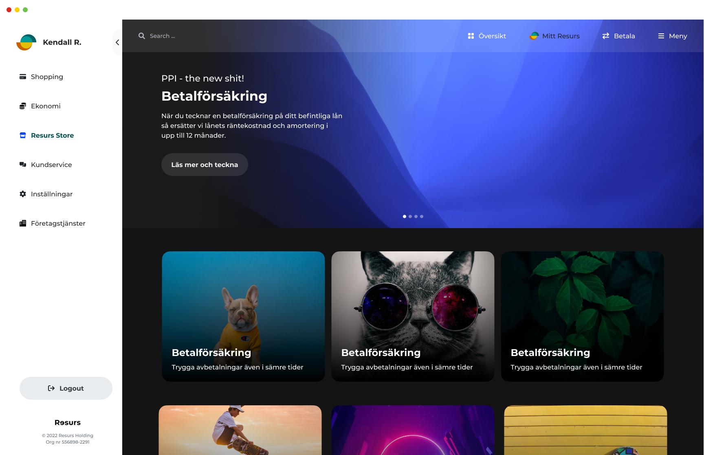
No design system, no documentation, and a maze of legacy flows — here’s how we built clarity, trust, and usability into every layer.
Legacy complexity blocked the work that mattered.
Years of ad-hoc growth had left people and teams navigating a fragmented service experience.
01Years of ad-hoc growth led to fragmented user journeys and inconsistent UX — creating friction for both users and internal teams.
02No unified patterns, feedback loops, or shared language across products resulted in duplicated effort and design debt.
03Critical tasks, including account actions and service requests, were hidden behind unclear navigation and inconsistent terminology.
04Support teams were overloaded, and user training became essential for even basic operations — a sign of structural UX debt.
Backed by data.
We re-architected service interactions around top tasks, reducing time to value and informing patterns used across the platform.
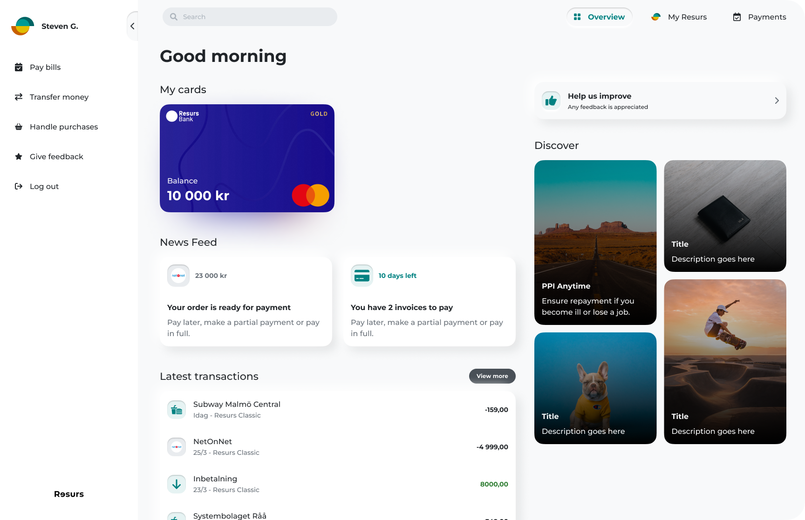
- Reduced average task time by up to 85%, helping users complete key service flows with confidence.
- Increased completion on journeys that previously required support, including transaction lookups and statement access.
- Lowered operational burden by reducing escalation cases and simplifying onboarding for non-technical users.
Common tasks became easier to complete.
Observed task times from three users in the supplied study. “Fail” means the user could not complete the task before the redesign.
| Task | User 1 before | User 1 after | User 2 before | User 2 after | User 3 before | User 3 after |
|---|---|---|---|---|---|---|
| Find recent transaction | 155 s | 13.415 s | 13.125 s | 11.415 s | 9.335 s | 9.215 s |
| Find recent statement | Failed | 24.255 s | Failed | 22.135 s | Failed | 14.355 s |
| Find 3-month transaction | 150.345 s | 20.115 s | 96.235 s | 15.335 s | 43.655 s | 11.145 s |
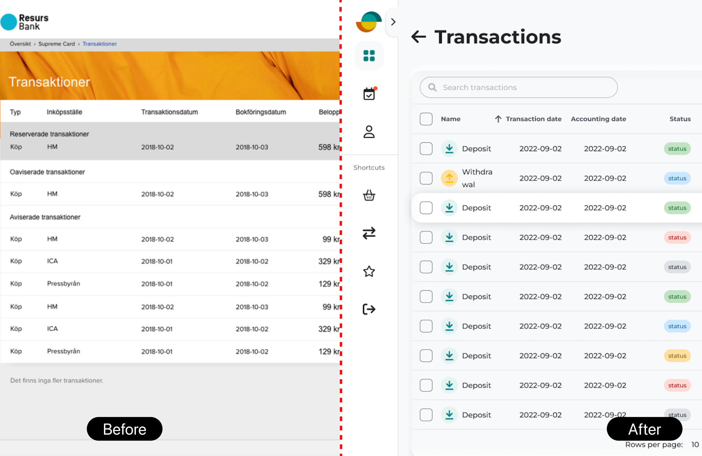
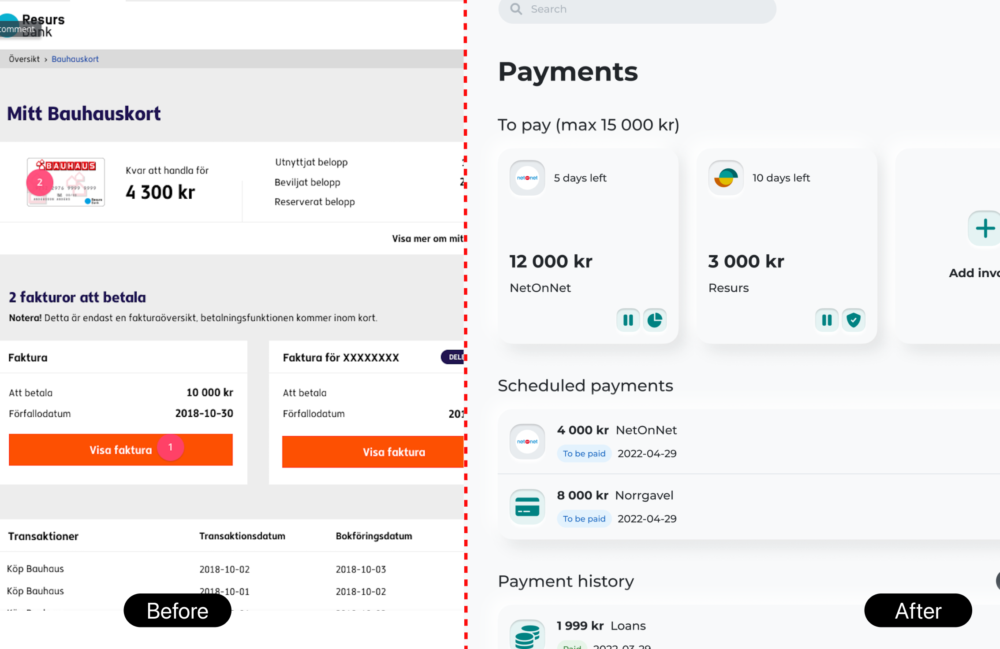
Critical self-service was hard to find.
Earlier “My Pages” screens spread related actions across inconsistent layouts and labels.
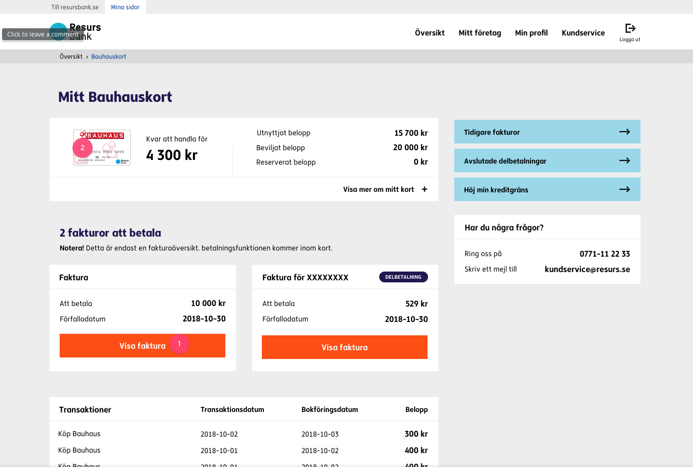
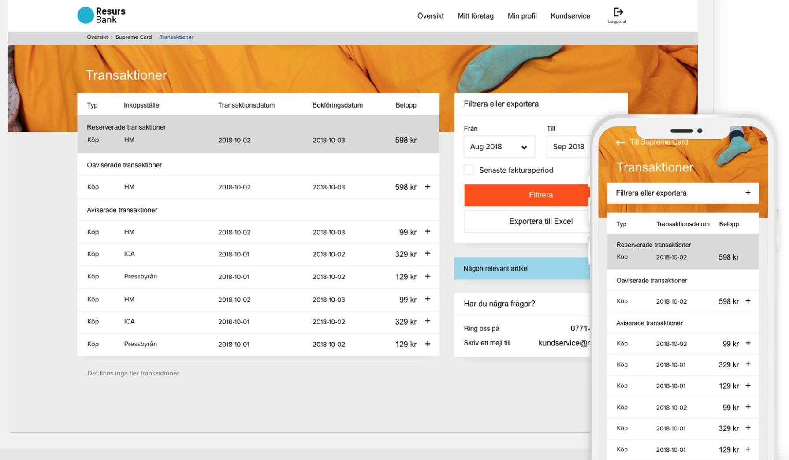
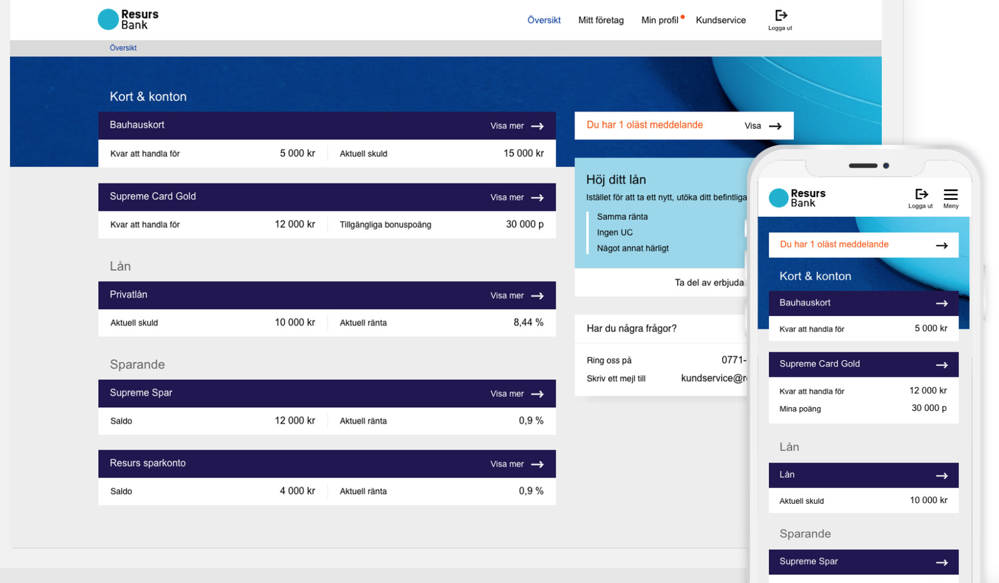
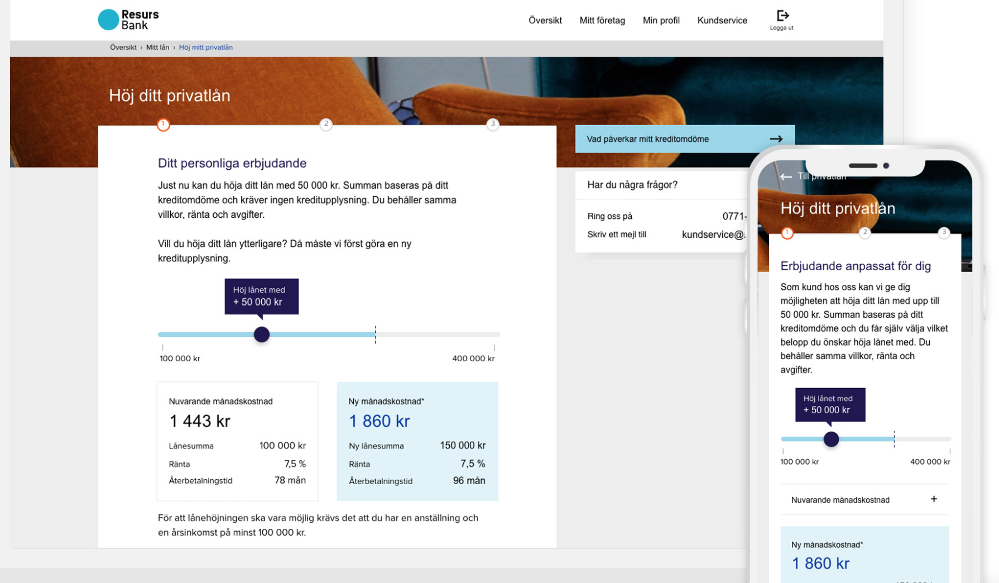
Find the friction before drawing the fix.
We mapped real journeys across the portal, looking for drop-offs, disorientation, and places where users needed support to finish a task.
The gaps became measurable.
The current portal was compared with three other financial self-service experiences. The table highlights the original audit findings.
| Dimension | Resurs My Pages | Nordic fintech A | Regional bank B | Regional bank C |
|---|---|---|---|---|
| Task completion and navigation | ||||
| Find recent transaction | 155 s before | 18 s | 24 s | 31 s |
| Find 3-month transaction | 150 s before | 22 s | 35 s | 28 s |
| Find recent statement | Failed for 3/3 users | 14 s | 19 s | Failed for 1/3 |
| Self-service capability | ||||
| Transaction search | None | Full search | Full search | Basic filter |
| Invoice download | Hidden | 1 tap | 1 tap | 2 taps |
| Support escalation rate | 38% of tasks | 5% | 9% | 14% |
| Design system and consistency | ||||
| Shared component library | None | Yes | Partial | Partial |
| Terminology consistency | 14 variants | Unified | Unified | Minor gaps |
| Navigation consistency | Inconsistent | Consistent | Consistent | Partial |
| Cognitive load and trust | ||||
| Critical tasks require training | Yes | No | No | Sometimes |
| Error message clarity | Technical / vague | Actionable | Actionable | Mixed |
| Task success rate | 31% before | 89% | 82% | 74% |
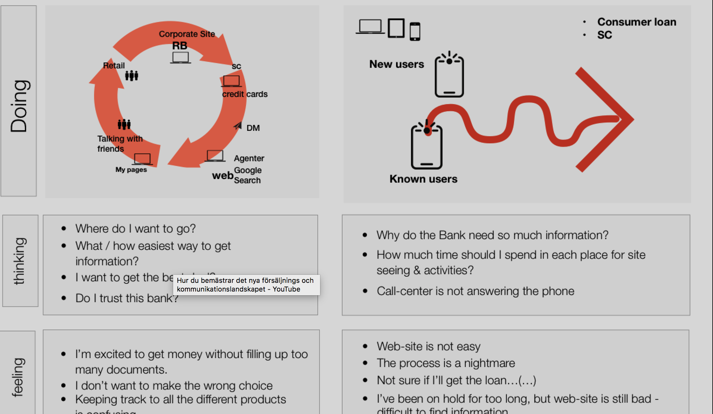
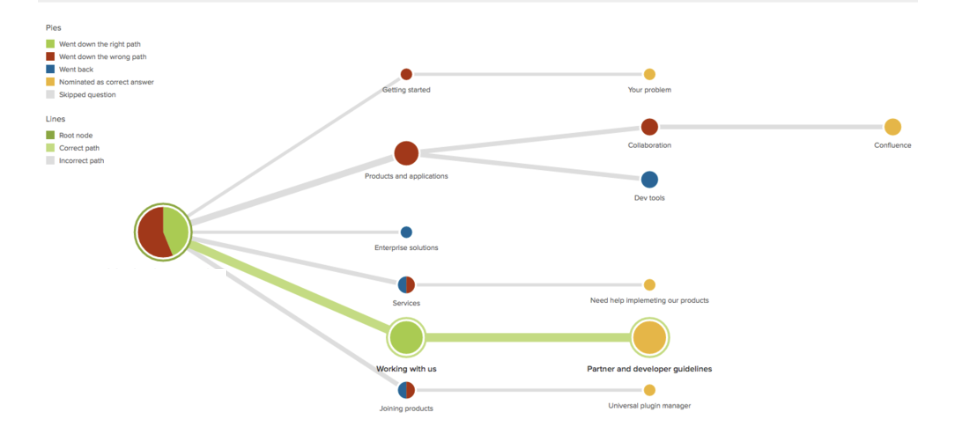
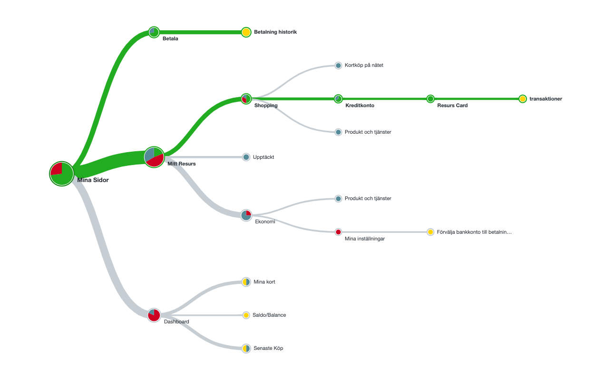
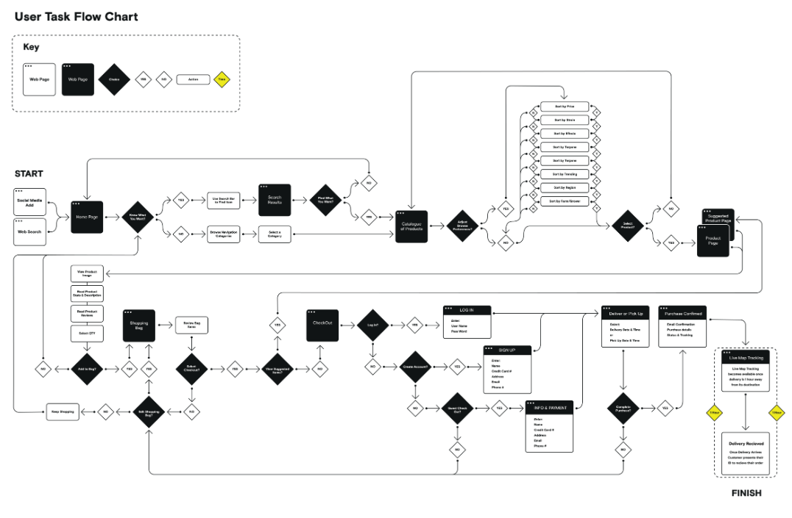
Visualizing real user journeys uncovered friction points, drop-offs, and disorientation. This informed a clearer information architecture and helped guide scalable redesigns.
A clearer workspace for real work.
We translated core user frustrations into actionable design goals — solving for clarity, flexibility, and ease of use through modular, reusable components.
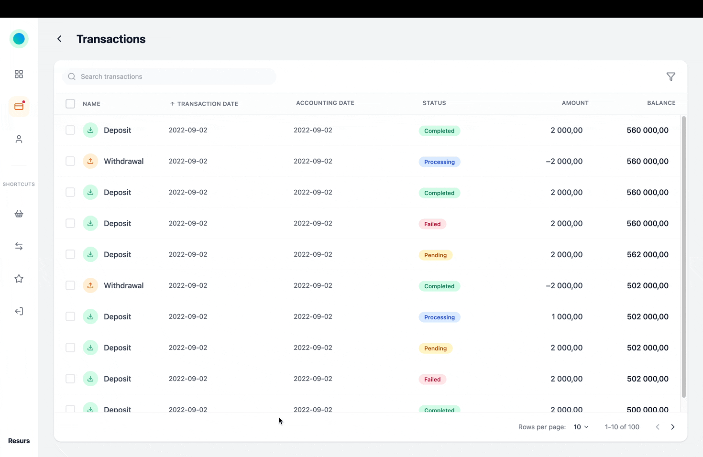